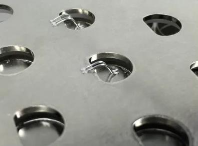

Initial Model
2S8P
Modelling two parallel blocks with 20x3 mm bus bars
turns out openscad is not sustainable, wrote a cli for clojure -> openscad compiler so starting from scratch
openscad code block
cell_height = 70.7;
cell_r = 10.625;
cell_d = cell_r * 2;
cell_distance = 5;
parallel_yn = 2;
parallel_xn = 4;
bus_bar_x = 20;
bus_bar_z = 3;
module_distance = 15;
series_yn = 5;
series_xn = 4;
parallel_module_x = (cell_d + cell_distance) * (parallel_xn);
parallel_module_y = (cell_d + cell_distance) * (parallel_yn);
echo("parallel_module_x", parallel_module_x);
echo("parallel_module_y", parallel_module_y);
module cell() {
cylinder (h=cell_height, r=cell_r, center=true);
translate ([0,0,(cell_height/2) +1 ]) {
cylinder (h=2, r=5, center=true);
}
}
module center(x,y,z) {
translate([-x/2, -y/2, -z/2]) { children(); }
}
module colorize(n, total) {
color(hue_to_rgb(n/total)) children();
}
// Where hue_to_rgb is the function from before:
function hue_to_rgb(h) =
(h * 6 < 1) ? [1, h*6, 0] :
(h * 6 < 2) ? [2-h*6, 1, 0] :
(h * 6 < 3) ? [0, 1, h*6-2] :
(h * 6 < 4) ? [0, 4-h*6, 1] :
(h * 6 < 5) ? [h*6-4, 0, 1] :
[1, 0, 6-h*6];
module spread(xn, yn, xdist, ydist, colorize_arg) {
total = xn * yn;
n = 0;
union() {
for ( ypos = [0:1:yn-1]) {
for ( xpos = [0:1:xn-1]) {
translate ([xpos * xdist, ypos * ydist, 0]) {
if (colorize_arg == undef) { children(); } else
{
n = (xpos + 1) + (ypos * xn);
echo(n, total, xpos, ypos);
colorize(n, total) children();
}
}
}
}
}
}
module parallel_module() {
spread(parallel_xn, parallel_yn, cell_distance + cell_d, cell_distance + cell_d) {
cell();
}
}
module series_module() {
spread(series_xn, series_yn,
(parallel_module_x) + module_distance,
(parallel_module_y) + module_distance)
{
parallel_module();
}
}
module bus_bar() {
bus_bar_y = (parallel_module_y * 2) + module_distance;
translate([0,0,0])
color([184/170, 115/170, 51/170], 0.5)
cube([bus_bar_x, bus_bar_y, bus_bar_z], true);
}
module series_pair() {
color([115/170, 184/170, 115/170], 0.5)
parallel_module();
translate([0, (parallel_module_x + module_distance) / 2, 0]) mirror([0,0,1]) color([115/170, 184/170, 115/170], 0.5) parallel_module();
translate([(cell_d + cell_distance) / 2, (parallel_module_y - module_distance /2), (cell_height / 2) + + 2])
spread(3, 1, cell_distance + cell_d, 0) {
bus_bar();
}
}
translate([(-parallel_module_x / 2) + cell_d - cell_distance, -parallel_module_y + (module_distance /2), 0]) series_pair();
//color([115/170, 184/170, 115/170], 0.5)
//spread(series_xn, series_yn, parallel_module_x + module_distance, parallel_module_y + module_distance )
//parallel_module();

Unified bus bar?
Actually from this it seems that a totally flat copper plate is better then bus bars, with potentially holes for cell level fusing.
Covering the tops without protruding around the cells would make the plate 80mm wide, 80x2mm makes a bar that causes almost no heating at 150A
Some pros seem to have reached the same conclusions:

Note that here bus bar is not in contact with actual cells, likely to eliminate vibration of the plate damaging battery insulation? depends on general approach to construction, seems like a good idea